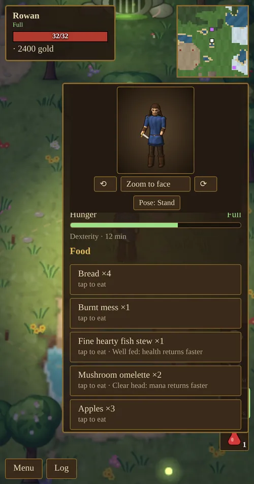
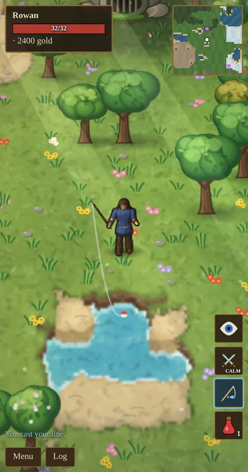
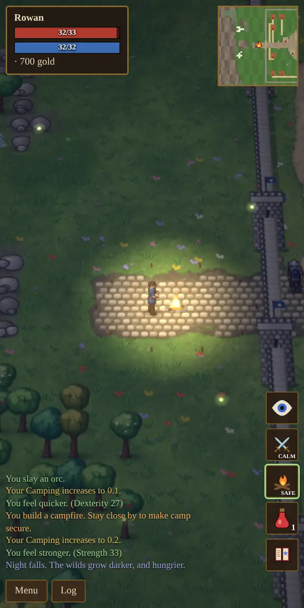
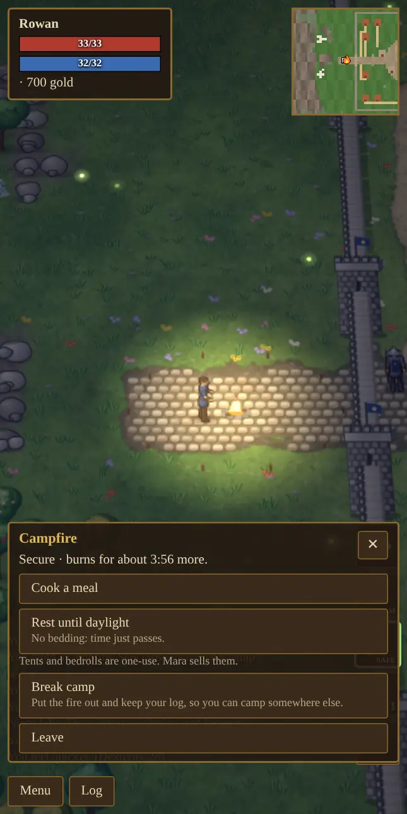
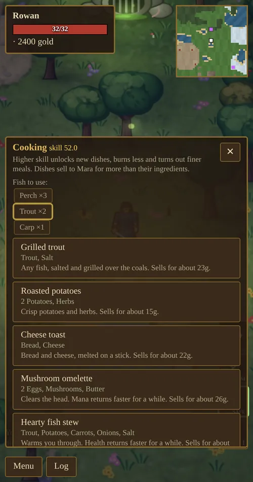
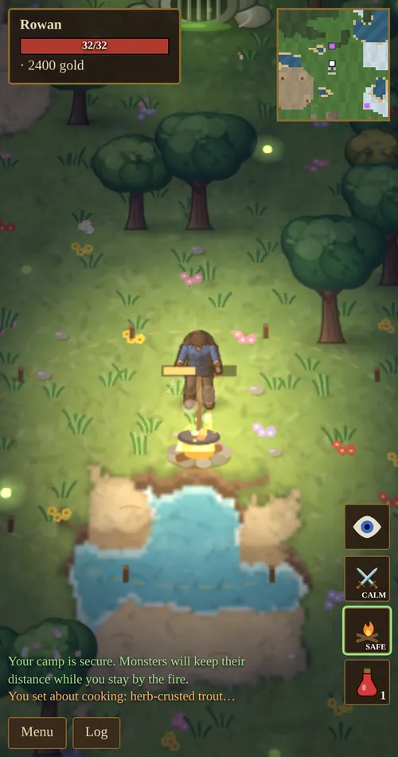
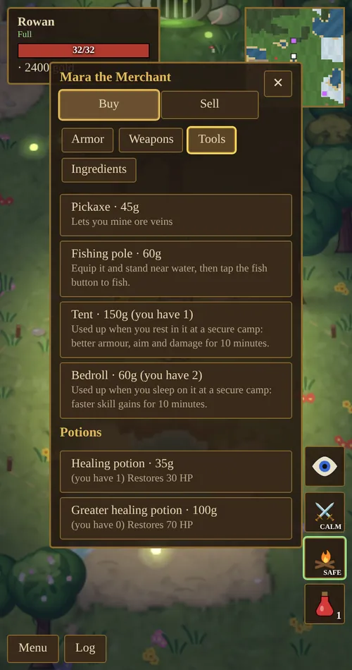

Chapter 8 of 11
Food, Fishing & Camping
Out past the walls you can live off the land: catch fish, cook them over a campfire, make camp safe from monsters and sleep until morning.
Hunger
You get hungry as you play. Your hunger is a meter from 0 to 130 that drops by about one point every 25 seconds, whatever you are doing. When you are anything other than Satisfied, your state shows under your name, and the Food tab of the Backpack shows it as a bar.
Hunger does not hurt you. It changes how fast your skills grow. Tap any food in the Food tab to eat it.

| State | Meter | Skill gains | Notes |
|---|---|---|---|
| Starving | 0–9 | × 0.5 | Skills barely improve. |
| Hungry | 10–34 | × 0.8 | |
| Satisfied | 35–74 | × 1 | You start at 70. |
| Full | 75–100 | × 1.15 | The best state to train in. |
| Stuffed | 101–130 | × 1 | No bonus, and you move about 30% slower. You cannot eat at 125 or more. |
From the top of Full you stay Full for about 10 minutes, then Satisfied for about 17 more. Being Stuffed lasts until the meter drops back to 100: about 12 minutes if you ate all the way to 130.
Bigger meals fill more of the meter: bread fills 12, apples 7, simple dishes 20–28, stews and pies 42–55, and the great fish feasts 60. Fine dishes fill 10% more and Masterful dishes 20% more. Every food drains at the same rate, so a fancy dish fills you further rather than for longer.
Fishing
Buy a fishing pole from Mara (Buy → Tools, 60 gold) and equip it like a weapon. A fish button appears with your other buttons. Stand within a few steps of any water and tap it.
You swing the rod back over your shoulder and cast. The float lands a couple of steps out and bobs until something bites; then the float jerks and splashes and you reel in. Tap the fish button again to reel in early. Walking away lets the line go slack.

What comes up depends on your Fishing skill. Higher skill means fewer empty lines and less junk, more fish, and rarer fish. A fish can also bite up to 10 points before you reach its skill, but much less often.
| Fish | Skill | Sells for |
|---|---|---|
| Perch | 0 | 6g |
| Trout | 12 | 10g |
| Carp | 22 | 12g |
| Pike | 35 | 18g |
| Salmon | 50 | 26g |
| River eel | 60 | 30g |
| Sturgeon | 75 | 45g |
| Golden carp | 88 | 120g |
| Moonfin | 95 | 250g |
| Skill | Nothing | Junk | Treasure | Fish |
|---|---|---|---|---|
| 0 | 35% | 41% | 1% | 23% |
| 50 | 23% | 22% | 3% | 52% |
| 100 | 10% | 3% | 5% | 82% |
Junk is a waterlogged boot, a rusted helm, a tangled net, an empty bottle or a dented kettle (2–6 gold each at Mara’s), or a piece of driftwood that counts as a log. Treasure is a sodden coin pouch (15–60 gold) or a gem. Each catch has its own sound: a splash and a chime for a fish, a dull clunk for junk.
Campfires and camping
A log makes a campfire. Out in the open, tap the campfire button, or use Build a campfire in the Camp tab of the Backpack. A fire burns for about four minutes, which is one full day and night.
Your Camping skill rises while you stay near a fire. Outside the town walls, standing by the fire also secures your camp: it takes 10 seconds at Camping 0 and 1 second at 100, and a ring of stakes appears when it is done. Enemies that are already fighting you stop the securing.
While you stay inside a secure camp, monsters keep their distance and wander off, unless they were already attacking you.

Tap the fire to open its menu:
- Cook a meal: opens the cooking menu.
- Rest: at night you sleep until dawn, when the night creatures are gone; by day you rest until dusk. Resting refills your health and mana. You can only rest at a secure camp with no enemies near.
- Break camp: puts the fire out so you can camp somewhere else. If the fire has more than two minutes left, you get the log back.

| Bedding | Cost | Rest with it to get | Lasts |
|---|---|---|---|
| None | – | Time passes. Health and mana refill. | – |
| Tent | 150g | +3 armor, +10% damage and +10% chance to hit | 10 real minutes |
| Bedroll | 60g | Skills improve 25% faster | 10 real minutes |
Tents and bedrolls are used up each time you rest with them, so buy several if you camp often. The rest menu lets you pick no bedding, a tent, a bedroll, or both at once. Fires built inside town cannot be secured, so you cannot rest there.
Cooking
Cooking needs a campfire next to you. Tap the fire, or its button beside your other buttons, and choose Cook a meal. If a recipe uses fish, pick which fish at the top of the menu.
After you choose a dish, the menu closes and you crouch at the fire and cook. It takes a few seconds, with a sizzle, then a chime for a good dish or a sad tone and smoke if you burn it. Moving or getting hit stops the cooking and nothing is used up. The menu comes back when the dish is done.
Buy ingredients from Mara (Buy → Ingredients). Every dish sells back to Mara for more than its ingredients cost. Mara also teaches Cooking up to 50.


You need the listed skill to cook a dish. At exactly that skill you burn it 30% of the time; every point above lowers that, down to 3%. Points above the requirement also make Fine dishes (up to 60% of the time) and, from 25 points over, Masterful ones (up to 40%). Fine and Masterful dishes fill more, sell for 1.3× and 1.7×, and their bonuses are 30% and 60% stronger and last 1.3× and 1.7× as long. A burnt mess is still food, barely.
| Dish | Skill | Ingredients | Fills | Bonus |
|---|---|---|---|---|
| Grilled fish | 0 | Any fish, salt | 22 | – |
| Roasted potatoes | 5 | 2 potatoes, herbs | 20 | – |
| Cheese toast | 10 | Bread, cheese | 24 | – |
| Mushroom omelette | 20 | 2 eggs, mushrooms, butter | 28 | Mana returns faster, 10 min |
| Hearty fish stew | 28 | Any fish, potato, carrot, onion, salt | 42 | Health returns faster, 12 min |
| Herb-crusted trout | 40 | Trout, herbs, butter, salt | 34 | +5 Dexterity, 12 min |
| Honey cake | 45 | 2 flour, egg, butter, honey | 24 | Skills improve 10% faster, 12 min |
| Berry tart | 52 | Flour, butter, 2 berries, honey | 26 | +5 Intelligence, 12 min |
| Fisherman’s pie | 60 | 2 fish, potato, butter, flour, cheese | 55 | +10 Fishing, 15 min |
| Spiced salmon | 70 | Salmon, caravan spices, honey, herbs | 38 | +6 Strength, 15 min |
| Smoked eel platter | 78 | River eel, salt, onion, bread | 40 | +8% chance to hit, 15 min |
| Golden carp feast | 88 | Golden carp, spices, herbs, butter, onion | 60 | +12% damage, 20 min |
| Moonfin supper | 95 | Moonfin, spices, honey, cheese | 60 | +20 Magic Resistance, 20 min |
Bonus times are real minutes, and they keep counting while the game is closed. Bread (5g) and apples (3g) can be eaten straight from the pack without cooking.
Magic resistance
Magic Resistance rises each time a spell or elemental attack hits you: fire, lightning, frost, shadow, storms, life-draining and curses, every hit from an elemental, and the spells of player killers. Arrows, ordinary blows, poison and plague do not count. Each point cuts that damage by 0.45%, to a limit of 60%, and a hit always does at least 1 damage. Archmage Ilvara teaches it up to 50. A Moonfin supper adds 20 points for a while.
Mara’s shop
Mara’s shop opens on two tabs. Buy has four smaller tabs: Armor, Weapons, Tools (pickaxe, fishing pole, tents, bedrolls and potions) and Ingredients.
Sell has Sell all loot, your gear and potions, and a list of fish and food. Tap one to sell a single item, or sell all your fish and food at once.
